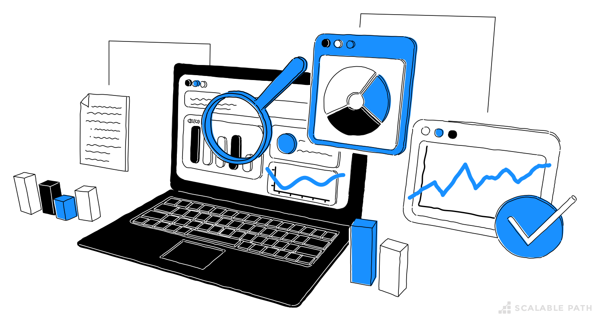

Run code Exploratory Data Analysis# An Introduction to EDA in R and Python for IDA Staff# Institute for Defense Analyses# 730 East Glebe Road · Alexandria, Virginia 22305# Exploratory Data Analysis# What is Exploratory Data Analysis (EDA)? Systematic approach to summarizing and visualizing data before modeling Helps uncover structure, spot anomalies, test assumptions Key EDA Steps Data cleaning & handling missing values Descriptive statistics (mean, median, variance) Visual inspections (histograms, box plots, scatterplots) Why EDA First? Prevents “garbage in, garbage out” in downstream analyses Builds your intuition—know your data before you trust your models  Azevedo, N (2023 July 21). _What is Exploratory Data Analysis? Steps & Examples._ Scalable Path. Retrieved June 25, 2025, from scalablepath.com/eda Motivation – Why does EDA even Matter?# Reveals Hidden Patterns in the Data which informs Anomaly Detection Resource Allocation Operational Planning Risk Mitigation Next: Data Cleaning# The very first step in any analysis is data cleaning. Cleaning your data—by finding missing values, fixing data types, and handling outliers—lays the groundwork for reliable, accurate results. Proceed to the Data Cleaning section to get started. Available Notebooks# To support you as you learn the fundamentals of data cleaning, we’ve created two guided, interactive notebooks—no prior coding or data experience required: Python Notebook: 01_data_cleaning_python.ipynb Walks you through each step using the pandas library. You’ll learn how to load your dataset, spot and fill missing values, correct data types, and flag outliers—with clear explanations and examples along the way. R Notebook: 01_data_cleaning_R.ipynb Covers the exact same tasks using the tidyverse packages (readr, dplyr, tidyr). Each step is broken down in plain language so you can follow even if this is your first time in R. Tip for Beginners: Start with the notebook that feels most familiar—even if neither does! Then try the other to see how the same cleaning steps look in a different tool. This side-by-side practice will build your confidence and give you flexibility for future analyses.